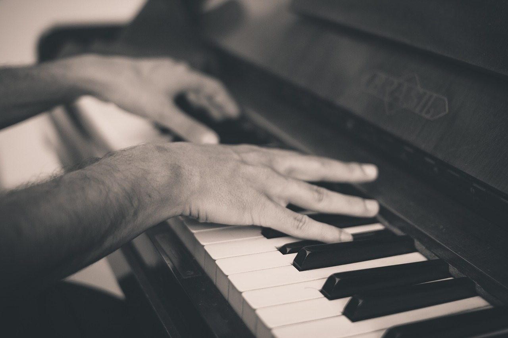

BGMの使用権を売っています。
夏空の夢
値段1000円
何年か前に作った曲です。夏をテーマにした曲ですが、夏特有の賑やかさではなく夏の終わりをイメージしていて、打ち上げ花火のような感じです。映画やドラマのクライマックス的な雰囲気を出しています。
APPLEのCMっぽい音楽
値段1000円
アップルのCM音楽のような、スタイリッシュで纏まりのある感じを目指して作りました。純粋に聴く音楽というよりは、映像ありきの音楽です。
latin rhythmical
値段1000円
あまり作らないのですがラテンっぽい音楽です。低音の期間楽器であるチューバが、跳ねるようなベースをしているのが特徴的な曲です。
Tomorrow
値段1000円
一応オーケストラ的な要素のある曲です。最初はエレクトロニカのつもりで作り始めて方向を変えた曲なので、スタンダードな器楽曲ではありませんが、フレーズ自体は意外と壮大なのでそれっぽいです。
Long dream
値段1000円
別れの季節としての春をイメージした曲です。儚く繊細な感じを出そうと試みました。ピアノと鉄琴が主体となっている小編成の器楽曲です。
行進
値段1000円
素朴な曲です。打楽器から始まり、メロディはフルート、クラリネットなどの木管楽器です。雰囲気としてはあっけらかんとしていて、ゆっくりと歩いている感じです。
8bit!
値段1000円
2Dゲームっぽい感じを出しました。ノイズを加工してドラムを作る作業が一番面倒くさくて一番時間がかかった割には非常に安っぽいので、ドラムはドラム音源を使って打ち込むのがベストです。
rainy electro
値段1000円
雨の日をイメージしたエレクトロ系の楽曲です。シンセ、エレピ、ドラムが主体となっています。テンションを付加した複雑な和音をけっこう使っていますが、テンポよく進むので割とシンプルな雰囲気です。
Adventure of the sea
値段1000円
ループを基調としたエレクトロです。夜中の深海を探索するイメージです。なのでリズムトラックにソナー音などを使っていたり、水の流れるような環境音などを入れています。
グッドバイ
値段1000円
切ない雰囲気の曲です。ピアノは基本的にアルペジオで、その上でメロディが鳴っています。
ブラスポップ
値段1000円
金管楽器とサックスを主体にしています。吹奏楽やビッグバンド的な雰囲気です。
アンビエンスチック
値段1000円
声が入っていて、ある意味では歌とも言えるかもしれませんが、とりあえずこちらに。この曲は環境音を使い、アンビエンス的な感じをイメージして作りました。ちなみに作るときに意識したのはスーパードンキーコングのBGMです。
木管楽器、ショートミュージック
値段500円
木管楽器、ホルン、グロッケンを使っています。短めなので、ちょっとした場面転換や、物語の終わりなどにも使えます。
バリアフリー
値段500円
ピアノを主体とした優しい雰囲気の曲です。学生時代に別の学校とコラボしてCMを作ることになり、CM音楽を意識して作りましたが企画倒になり、この曲だけ残りました。
trick or treat
値段500円
けっこう昔の曲です。ハロウィン用にノリの良い何かを作りたくて作った記憶があります。荒っぽさもありますが、何故かビッグバンド的で、何故かそこそこ雰囲気が出ているので、これはこれで面白いと思います。
wonderland
値段500円
リディアンスケールという浮遊感のある音階を使い、不思議な世界に落ちていく感じを表現しています。
歌ものを売っています。お買い上げいただいた場合、メロディありの音源の他に、メロディを抜いたオケをお渡しします。その後、販売ページから曲を消します。作詞はいたしません。
歌もの1（前衛的）
値段20000円
少し前衛的な要素がありつつ明るい曲です。
歌もの2（明るいポップス）
値段20000円
タイトル通り明るい雰囲気のポップスです。コード進行は意外と複雑だったりします。信じてもらえない確率が高いですが曲の構成はピロウズのパトリシアという曲を参考にしています。最後のサビの前のDメロにイントロのコード進行を使っているあたりが特にそんな感じです。
歌もの3（バラード）
値段20000円
ピアノ、ベース、ドラム、ストリングスが主体になっています。展開にメリハリをつけるためにBメロは若干リズミカルです。
歌もの4（ミドルテンポ、短め）
値段10000円
ミドルテンポで短めの曲です。使っているフレーズなどがキャッチーで、アレンジも比較的キャッチーです。普段はボーカル用のメロディにシンセを使っていますが、気分を変えるためにフルートを使っているだけで、深い意味はありません。
歌もの5（ポップス）
値段20000円
少し前に作った曲です。サビの尺を15秒くらいに抑えることによって、サビ以外の部分を大切にするというコンセプトですが、フレーズが意外と汎用性が高いような気がしたので、アウトロにも流用しました。